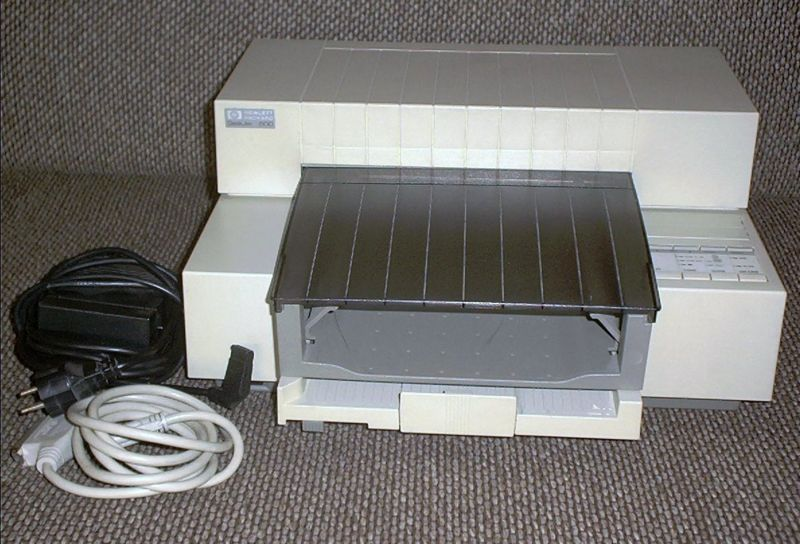
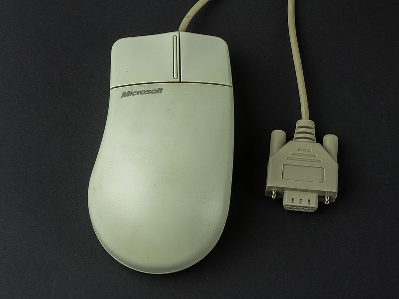
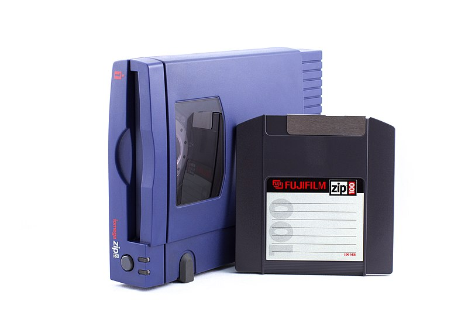

Una impresora de inyección de tinta asequible y de buena calidad. Popular tanto en el hogar como en oficinas pequeñas. Ofrecía impresiones en blanco y negro nítidas y con buen rendimiento. Fácil de instalar, con cartuchos económicos para la época. Marcó el inicio de la era de la impresión personal asequible.
Credit: Wikimedia Commons - Stahlkocher
Uno de los primeros mouses ampliamente usados con interfaz serial. Era confiable, con una bola mecánica que requería limpieza frecuente. Permitía controlar el puntero de forma precisa, ideal para interfaces gráficas. Compatible con Windows 3.1 y Windows 95 sin necesidad de drivers externos. Fue un estándar en muchas PC durante buena parte de la década.
Credit: Wikimedia Commons - Raimond Spekking
Una alternativa al disquete con mayor capacidad (100 MB). Permitía hacer respaldos de forma sencilla y transportable. Se conectaba por puerto paralelo o SCSI, según el modelo. Muy utilizada por diseñadores gráficos y estudiantes. Aunque fue superada por los CDs, fue muy innovadora en su tiempo.
Credit: Wikimedia Commons - Yuri Litvinenko